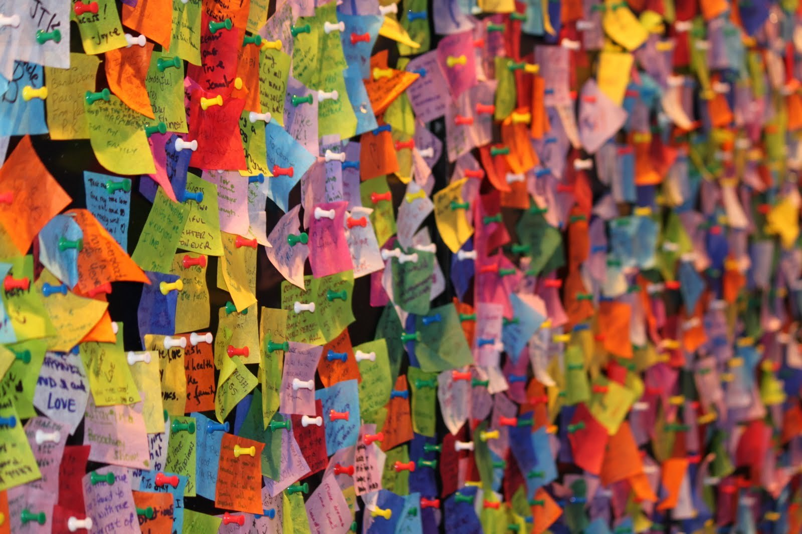

What this is about
This is a website to help me organise my notes
Useful general links
- Icon Archive or Free Icons
- Photos: Pixabay
- Photos: Unsplash
- A list apart (UX, DEV and A11Y)
Acronyms
- AJAX - asynchronous Javascript XML
- API - application programming interface (how two computer talks together)
- ARIA - Accessible Rich Internet Applications, designed to improve the accessibility of applications, i.e. to make them more usable for people with disabilities.
- As Is - defines the current state of the business process in an organisation to clarify exactly how the business process works at the moment
- ASP - application service providers
- AT - Assistive Technology or Access Technology
- CDN - content delivery network (CDN) is a system of distributed servers (network) that deliver webpages and other Web content to a user based on the geographic locations of the user, the origin of the webpage and a content delivery server
- CSS - Cascading style sheets
- CMS - Content management systems (Drupal, WordPress Joomla) = computer application that allows publishing, editing, modifying, organizing, deleting, and maintaining content from a central interface.
- CRM - Customer Relationship Management
- DBMS - Database Management System
- DNS - internet Domain Name Service
- EMB - Executive Management Board
- ETA - expected Time of Arrival
- FTP - file transfer protocol
- IDE - Integrated Development Environment
- KPI - Key performance indicator, used to evaluate factors that are crucial to the success of an organisation
- RAM - random access memory
- MIPS - means millions of instructions per second.
- .NET - Framework (pronounced dot net) is a software framework developed by Microsoft that runs primarily on Microsoft Windows.
- ORB - object request broker
- OS - Operative System
- RMI - remote Method Invocation
- ROI - Return On Investment
- RPC - remote procedure call
- SDK - Software Development Kit
- SLA - Service level Agreement
- SQL - Structured Query Language (sequel)
- SWOT - Strengths, Weaknesses, Opportunities, and Threats (BA term)
- TAS - test and set
- To Be - defines the future state of a business process in an organisation is to clarify how the business process will work, at some point in the future, once changes are made
- TOC - table of content
- UAT - user acceptance testing
- SUDO - super user Do, linux commands
- WCAG - Web Content Accessibility Guidelines
